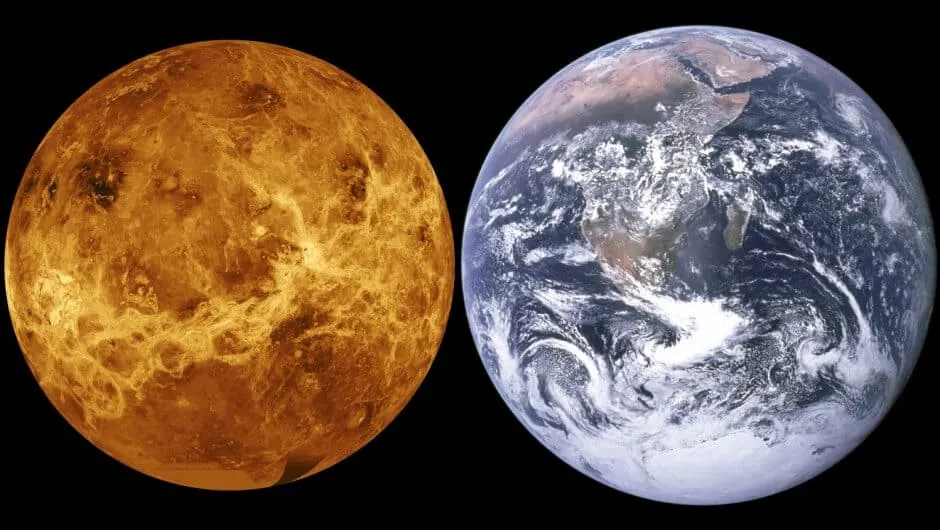

Vênus é o segundo planeta a partir do Sol e o mais quente do Sistema Solar.

É chamado de “irmão da Terra” por ter tamanho e composição semelhantes.

Vênus leva cerca de 225 dias para orbitar o Sol e tem uma atmosfera espessa, rica em dióxido de carbono, com nuvens de ácido sulfúrico. Esse intenso efeito estufa mantém a superfície próxima de 465 °C, em média, e a pressão é cerca de 92 vezes maior que a terrestre. Ele pode ser visto como a Estrela da Manhã ou da Tarde.